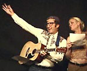
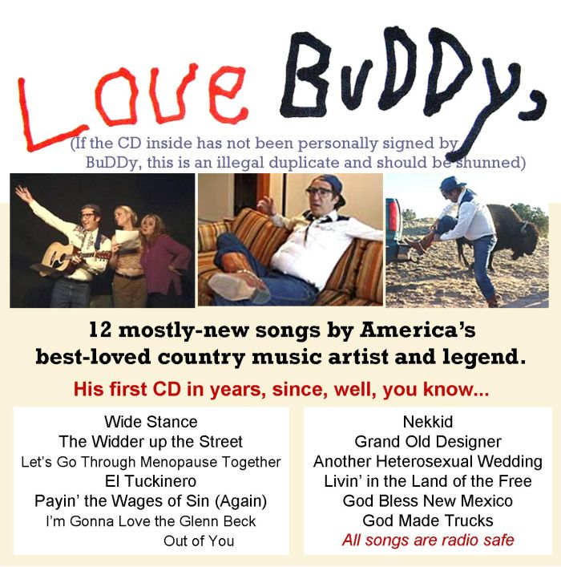

Sneak peak music page for BuDDy show and CD - 2010 (show info)

SONG DEMOS (using final instrumental tracks) 11-29-10
LIVIN' IN THE LAND OF THE FREE
LET'S GO THROUGH MENOPAUSE TOGETHER
I'M GONNA LOVE THE GLENN BECK OUT OF YOU
All songs written by Jim Terr (c) 2009 or 2010 Blue Canyon Music BMI
(CD cover, roughly) See celebrity endorsements (private link)
